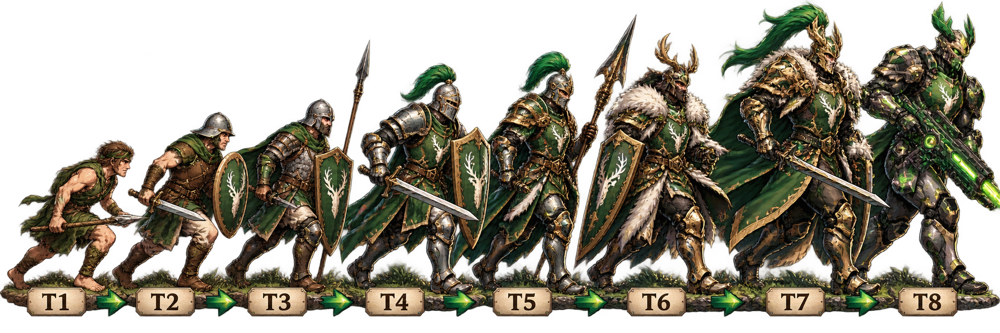

Understanding Troop Tiers
Why does everyone talk about T5, T6 and T7 troops? And is the expensive journey from Barracks level 40 to 50 really worth it? Understanding the milestones makes it easier to plan your next upgrade.
Level Is Not Tier
A Castle level determines how far you can develop your city. A Barracks level determines which tier of that troop type you can train, provided you meet the game's other requirements. A troop tier (T1, T2, T3 and so on) describes the troop's progression. So T5 Bowmen are not level 50 Bowmen: they are fifth-tier Bowmen.
Different troop types have their own Barracks. Upgrading one Barracks does not mean all your other troop types have reached the same tier.
Three Important Milestones
Your starting point for the next big climb
A meaningful upgrade halfway to level 50
The current top tier available on server 538
On server 538, Castle level 50 is already attainable before Frost S2 and is the current level cap. T7 troops are also referenced by in-game objectives. The progression above means that level 45 is an important goal of its own, not merely a stepping stone to level 50.
Why Level 45 Matters
Upgrading Barracks between levels 40 and 50 is expensive. It can feel like an endless drain on resources and building time if you think the only reward comes at level 50. But the T6 milestone at level 45 changes that calculation: you can work toward a stronger troop tier before completing the full climb to T7.
That makes it easier to plan in stages. Reach T6 first, evaluate your resources and priorities, and then decide when to push toward T7.
Planning as a Free-to-Play Player
For F2P players, resources, speedups and construction time are especially valuable. You do not have to upgrade every Barracks at once. Consider which troop types you actually use in your main marches, and prioritize the Barracks that will benefit those marches most.
Remember to consider the rest of your account as well: Immortals, dragons, research and other buildings still matter. A higher troop tier is useful, but it is one part of a stronger army, not the whole strategy.
Before You Upgrade
Check the upgrade requirements and available troop tier in your own Barracks. Server and season progression can affect what is currently accessible. The T8 warrior in our banner represents the wider troop progression; T7 is the current ceiling for server 538.